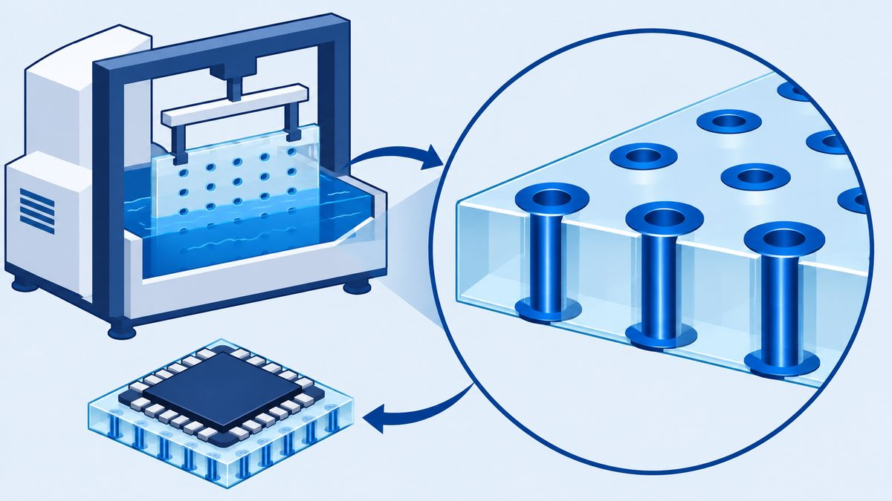

슈미트, 유리기판 관통비아 도금장비 출시

슈미트 그룹(SCHMID Group)이 유리 코어 기판의 관통비아(TGV)를 금속화하는 패널 도금 플랫폼 퀀텀라인 P+(QuantumLine P+)를 출시했다. 이 장비는 비아 아래쪽에서 구리를 성장시켜 내부를 채우는 공정을 적용한다. 유리 코어 기판의 파일럿 생산을 양산으로 확대하는 과정에서 필요한 비아 충전 단계를 대상으로 한다.
슈미트에 따르면 신제품은 최대 50:1의 종횡비를 가진 비아를 내부 빈 공간 없이 채우도록 설계됐으며, 패널 전반의 도금 균일도는 ±6%다. 회사는 기존 도금 시스템과 비교한 처리량이 4~5배라고 설명했다. 다만 발표 자료에는 비교 장비의 사양이나 운전 조건, 개별 생산라인에서 검증한 처리량이 제시되지 않았다.
유리 코어는 대형 패키지와 미세 배선에 필요한 평탄성 및 치수 안정성을 제공하는 소재로 제시됐다. 유리를 코어로 사용하더라도 그 위아래의 전기적 연결은 별도로 만들어야 한다. TGV는 이 연결을 담당하며, 비아 내부에 구리를 신뢰성 있게 형성하는 작업이 필수다. 이번 장비의 개발 대상은 유리 자체의 제조가 아니라 유리에 형성한 관통 구조를 도전성 금속으로 채우는 후속 공정이다.
슈미트는 비아가 깊고 좁아질수록 기존 컨포멀 도금과 브리지 충전 방식의 적용에 한계가 생긴다고 설명했다. 비아 안에 이음매나 빈 공간이 남으면 전기적 특성과 장기 신뢰성에 영향을 줄 수 있다. 패널 표면에 필요 이상으로 두꺼운 구리층이 쌓이는 문제도 있다. 이 구리층은 다음 평탄화 단계에서 제거해야 하므로, 비아 내부 충전 상태와 표면 도금량을 함께 관리하는 것이 공정 설계의 대상이다.
퀀텀라인 P+는 비아 바닥에서 위쪽으로 충전이 진행되도록 해 이러한 문제에 대응하는 방식이다. 슈미트에 따르면 대응 패널 크기는 510×515밀리미터이며, 적용 가능한 유리 두께는 200~1500마이크로미터다. 회사는 서로 다른 설계와 비아 밀도에서도 균일한 도금이 가능하다고 밝혔다.
도금은 슈미트가 구성한 유리 코어 공정군의 일부다. 퀀텀라인 H+(QuantumLine H+)는 습식 식각을 이용한 TGV 형성과 고청정 처리를 맡고, 플라스마라인(PlasmaLine)은 진공 금속화로 시드층을 형성한다. 비아를 채운 뒤에는 인피니티라인 L+(InfinityLine L+)이 화학기계적 연마(CMP)를 통해 패널을 평탄화한다.
소재와 공정의 연결점은 유리 표면 및 비아 내부에서 금속층을 형성하고, 필요한 구리만 남기는 단계에 있다. 발표 자료는 습식 처리와 도금, 진공 금속화를 패널 수준에서 연계하는 구성을 제시했다. 반면 도금액이나 첨가제, 시드층의 구체적인 조성은 공개하지 않았다. 따라서 이번 발표를 특정 화학소재의 채택이나 공급 계약으로 볼 수는 없으며, 확인된 내용은 유리 코어 금속화 공정과 이를 위한 장비의 출시다.
슈미트는 충전 비아의 신뢰성을 열 사이클 시험(TCT)으로 확인했다고 밝혔다. 다만 해당 주문에 신제품이 포함되는지와 고객사, 공급 규모, 설치 일정은 이번 발표에서 구체적으로 밝히지 않았다.